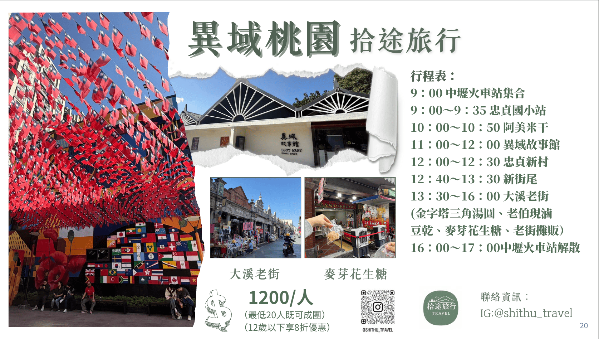
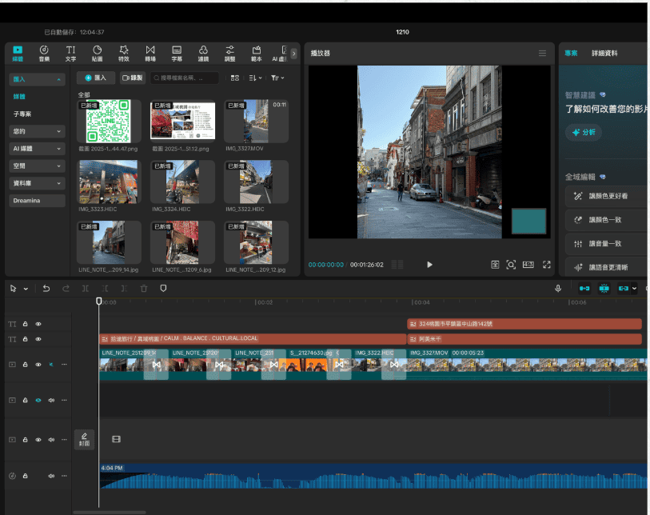
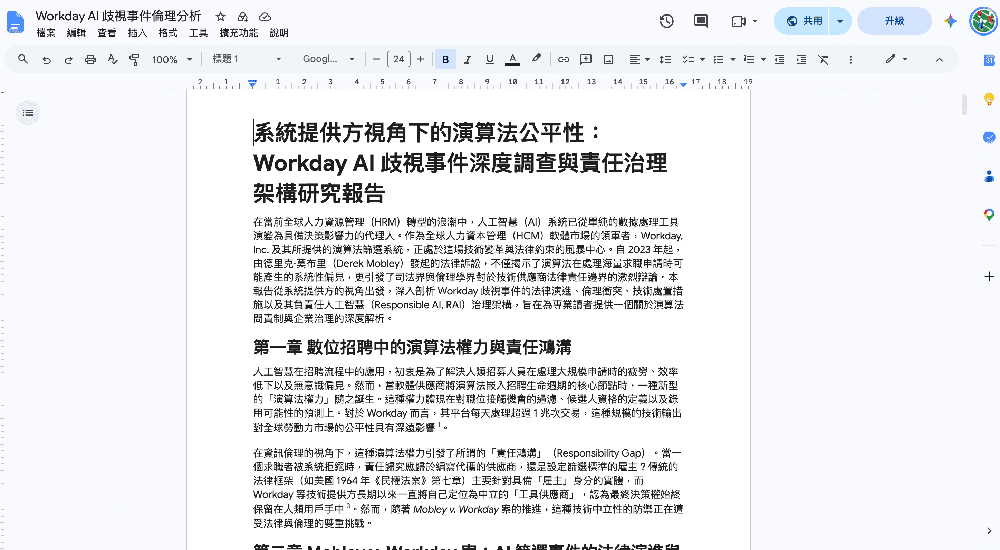
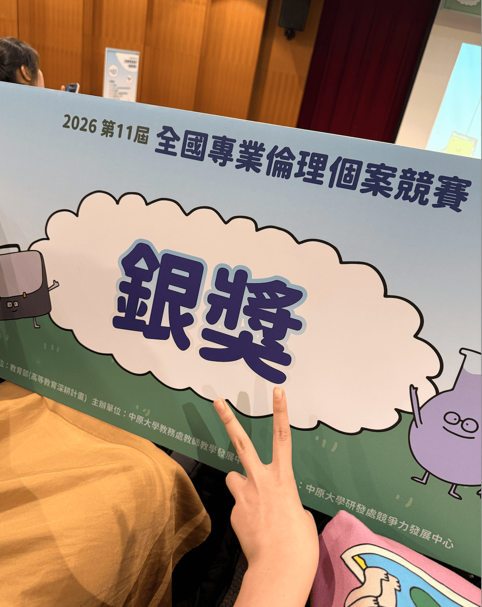
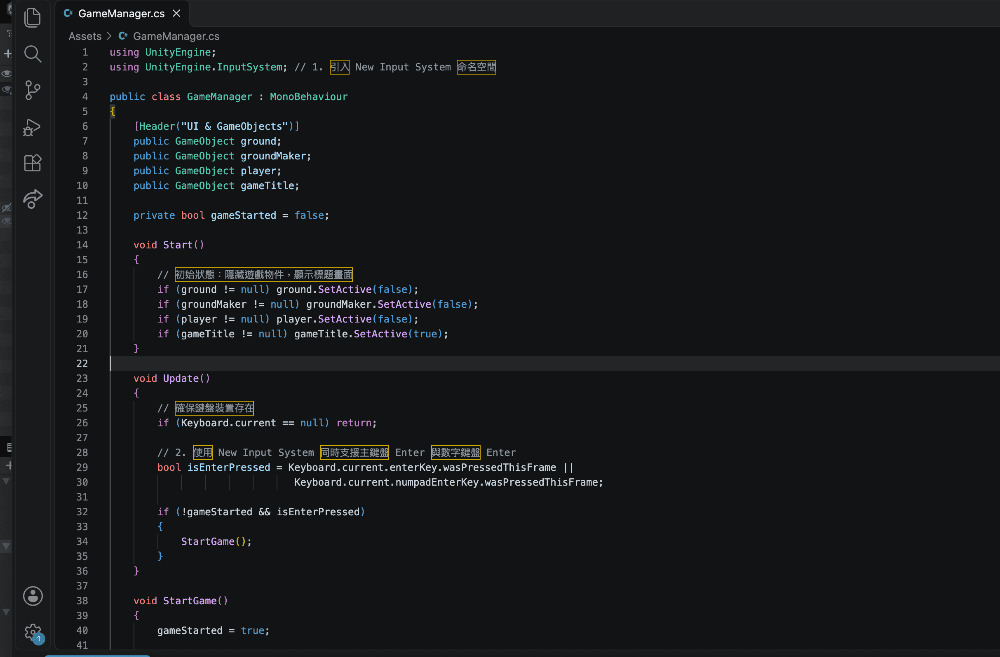

"When life gives you
lemons...congrats, now you
have lemons."
A college student
LOVE Adventure & Nature
您好，我是蘇彥蓉，來自台灣，現就讀於中原大學資訊管理系。
我的興趣包括旅遊、登山、音樂和閱讀。我喜歡探索新事物，
並且熱衷於學習不同的技能和知識，希望能夠在資訊管理領域中發揮我的專長。
Language & Skills
Computer Skills
Language Skills
Experiences
2025｜企業概論


以「從歷史走進文化共融」為核心概念，串連桃園中壢與大溪兩地的重要文化景點。從滇緬風味的阿美米干出發，走入忠貞新村與異域故事館的移民歷史，再轉往富含傳統風華的大溪老街，帶領遊客以一日的節奏品味桃園多元而深層的文化肌理。 以行銷組員的身份負責了參與了以下項目：DM 製作、行程介紹、特色、新聞稿、任務六報告、任務六影片、任務六簡報、大溪老街資料收集、問卷調查與分析、任務四報告、實地勘查。
2026｜全國專案倫理個案競賽


透過指導教授與組員的團隊合作，我們完成了關於「系統提供方視角下的演算法公平性：Workday AI 歧視事件深度調查與責任治理」的專題研究報告。本報告以震撼人力資源科技界的 Mobley v. Workday 訴訟案為核心切入點，深入剖析 AI 招聘系統在處理海量求職申請時可能產生的系統性偏見，並聚焦探討「演算法權力」介入職場決策後，在系統提供方與雇主之間所引發的責任鴻溝與資訊倫理衝突。
2026｜2D遊戲製作

《Echoes Aloft》 是一款設定在神祕高空世界中的廢墟探險跑酷動作遊戲。隨著畫面展開，散落的碎片逐漸凝聚成遊戲標題，濃霧隨之消散，一座座漂浮在雲海中的古老空島完整浮現。玩家將扮演一名在失落文明遺跡中醒來的失憶主角，透過在斷垣殘壁間奔跑跳躍與解開機關謎題，一步步找回自己的身份。 本作使用 Unity 開發，結合課堂上老師的教學與課外參考資料，實踐如何將 AI 工具 融入 Unity 遊戲設計流程中，從視覺概念發想、關卡設計到程式實作，完整打造出這款充滿神祕氛圍的探索遊戲